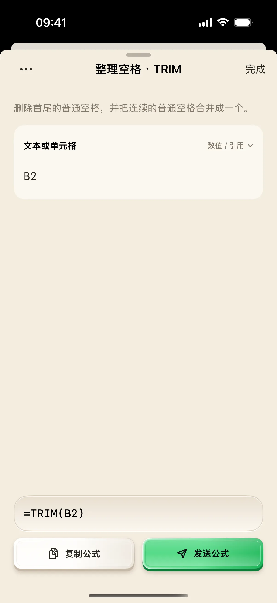
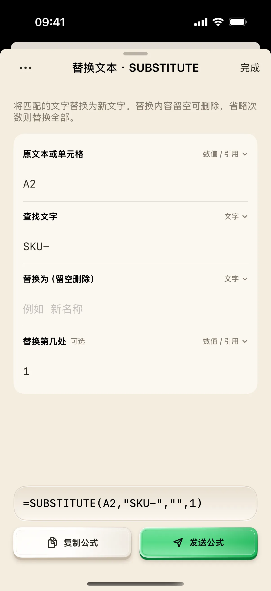

从别处导出的商品名称，可能同时带有编号前缀和多余空格。本文把问题拆成两列：B 列移除指定文字，C 列整理普通空格。每一列都能单独检查，出错时也容易知道是哪一步造成的。
开始前准备
- 在 Mac Excel 打开本文 CSV，确认 Original 位于 A1，三条商品名位于 A2:A4。
- 在 B1 输入 Removed，在 C1 输入 Cleaned，保留 A 列作为原始数据。
- 在奶猫妙控的布局列表中搜索“文本处理”，进入财务公式对应桌面。
1. 先保留原始值，观察两类问题
下载练习数据。A2 是前后带普通空格的“ SKU-Blue Mug ”，A3 是“SKU-Red Cup”，A4 是“SKU-Gift-SKU-Box”。打开文件后不要先手动删空格。
A2 用来检查空格整理，A4 用来区分“替换全部匹配”与“只替换第一次”。保留原始列，才能看出清理步骤是否误删了名称中间的内容。
下载：商品名称清理练习数据（CSV）。
2. 长按 SUBSTITUTE，填写需要移除的文字
在文本处理桌面长按 SUBSTITUTE。将“原文本或单元格”填写为 A2，类型使用“数值／引用”；“查找文字”填 SKU-，类型使用“文字”。“替换为（留空删除）”留空，“替换第几处”暂时也留空。
此时预览应为 =SUBSTITUTE(A2,"SKU-","")。其中 "" 表示替换成空字符串，也就是删除匹配文字。这是允许的空值，不必为了让输入框“有东西”而填一个空格。

3. 在 B2 验证第一步，只检查删除文字
复制公式，在 Mac 的 B2 粘贴并确认；若手机与 Mac 没有共享剪贴板，可在 B2 手动输入上面的公式。已连接时，也可先聚焦 B2，再从手机发送公式。
B2 应去掉 SKU-，但仍保留原有的多余空格。先确认这一点，再在 B3 使用 =SUBSTITUTE(A3,"SKU-","")，在 B4 使用 =SUBSTITUTE(A4,"SKU-","")。本例 B3 应为 Red Cup，B4 应为 Gift-Box。
4. 用 TRIM 处理第二列的普通空格
回到文本处理桌面，长按 TRIM，把参数填为 B2，保持“数值／引用”。预览应是 =TRIM(B2)，复制后放入 C2 并在 Excel 确认。
C2 的预期结果是 Blue Mug：首尾普通空格消失，Blue 和 Mug 中间的连续普通空格变成一个。再在 C3、C4 分别使用 =TRIM(B3) 与 =TRIM(B4)，核对结果为 Red Cup 和 Gift-Box。

5. 只想删第一次出现时，填写次数参数
重新长按 SUBSTITUTE，仍使用 A2 和 SKU-，新文字留空，在“替换第几处”中填 1。预览应为 =SUBSTITUTE(A2,"SKU-","",1)，表示只替换第一次匹配。
这个差别在 A4 更明显：在一个新的空白单元格试 =SUBSTITUTE(A4,"SKU-","",1)，预期是 Gift-SKU-Box；省略最后的 1 时，所有匹配都会被替换，结果是 Gift-Box。根据自己的商品编号规则选择，不要未经检查就批量覆盖原始数据。

参考：Microsoft：SUBSTITUTE 的次数参数。
6. 确认结果后再应用到自己的表格
回看三列：A 列是原始值，B 列显示文字替换结果，C 列显示空格整理结果。先用几条有代表性的商品名检查，包括没有前缀、含重复前缀和中间空格的情况，再扩大范围。
如果从网页复制的名称仍有看起来像空格的字符，先辨认字符类型。TRIM 处理普通 ASCII 空格，不能单独移除不换行空格；不要因为公式没报错，就认定所有可见空白都已清理。
操作不符合预期时
新文字留空，为什么仍能复制公式？
SUBSTITUTE 的新文字允许为空字符串，App 会生成 ""。这表示删除匹配内容，属于有效公式。
为什么 A2 被当作两个字符，而没有读取单元格？
检查原文字参数是否被切换成“文字”。引用单元格时应选“数值、引用或公式”，确保预览显示 A2 而不是 "A2"。
为什么名称中间的 SKU- 也没了？
省略次数参数会替换所有匹配。如果只要替换第一次，在“替换第几处”填 1，并用含重复匹配的练习行确认。这仍是匹配位置规则，不是专门判断前缀的功能。
能直接在手机看到清理后的单元格吗？
本文公式编辑器展示生成的公式文本。结果应在 Excel 中确认，不能把公式预览当作单元格读回。
本文按奶猫妙控 1.2.0 的界面与操作编写，更新于 2026 年 9 月 10 日。查看更新日志 · 连接与权限帮助。